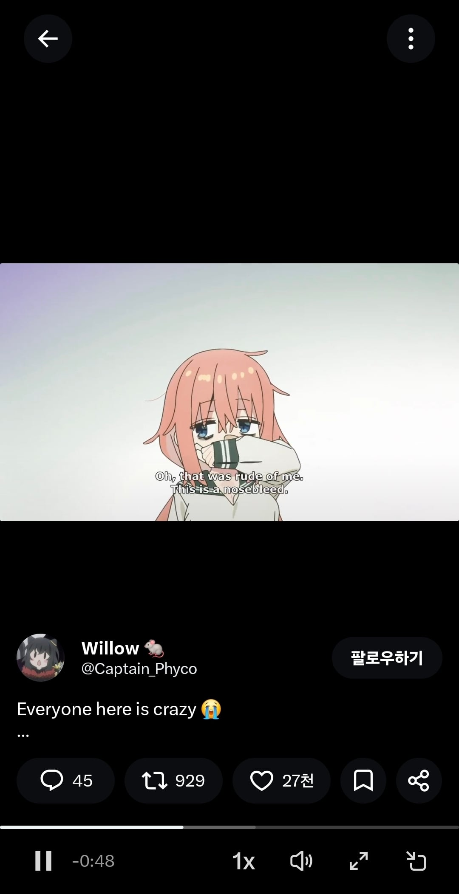

32 · 18 · 5 시간 전 · 원문

이건 첫 영상 끝나고 나오더라
수집 당시 댓글 18개
어그로아님 · 11 시간 전
생구멍?
↳ 답글 · 종갓집맛김치 · 11 시간 전
댕멍꿀꿀 · 10 시간 전
어느기사 · 9 시간 전
그래서 애니제목이
↳ 답글 · 호랑냥표 · 6 시간 전
생구멍
↳ 답글 · 중국산구렁이 · 6 시간 전
년차대출갚는중 · 9 시간 전
저거 애니 성우 야니네코에 술퍼먹는 고양이그분인가? 비슷하네
↳ 답글 · 어그로아님 · 6 시간 전
아니래
악덕팬더 · 6 시간 전
도로로로로롱 · 6 시간 전
괜춘방춘 · 5 시간 전
컴터로 하는건가?
스님이버스중간에내리면중도하차 · 5 시간 전
동그란 자국이 남아있는데
순라면진한맛 · 5 시간 전
가구에 저런 장식 문양 기계가 파는 거였구나
혼모노 · 5 시간 전
중간에 살짝 더 파버렸네
424 · 5 시간 전
저거 루터기랑 같은 목적임?
↳ 답글 · 습습후후 · 2 시간 전
루터기 같음 깊이가 똑같은거 보니까
ITEROSJD · 3 시간 전
중간즘 디자인이 좋은데
아시엘 · 1 시간 전
생구멍 시작했구나


생구멍?